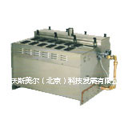
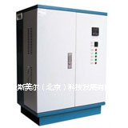
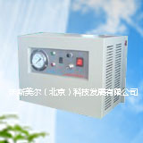
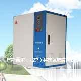
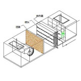
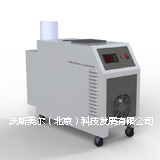
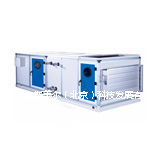

产品中心
联系方式
地址：北京市海淀区上庄镇白水洼东工业区
邮编：102206
电话：010-57739125
传真：400 8892 163 转 213667
电子信箱：a-smile@vip.126.com
- 
- AS-ER型电热加湿器 AS-ER型电热加湿器是根据电流通过电阻产生热，电能转换成热能的原理，电加热管浸没在水中，电热管产生热量，从而使水沸腾变成水蒸汽，SDR型AS-ER型电热加湿器创造一个湿度环境经过三个过程：1、产生蒸汽：通过电加热使水沸腾产生蒸汽。 2、控制：通过加湿器配有的.. 查看更多>>
- 
- 电极式加湿器 SDJ型电极加湿器采用性能更加稳定的网状电极片，电流大小与供电电压、电极浸入水中的面积、电导率有关，加湿器蒸汽产生量受功率或电流强弱的影响，电流的控制可以用改变电极浸入水中面积的方法来调节。水的电导率维持在一定的范围内，可以实现良好的系统连.. 查看更多>>
- 
- 高压喷雾加湿器 AS-HPS型高压喷雾加湿器是将自来水经增压泵增压后，通过“微细雾化”喷嘴，产生非常细小的液滴，小液滴与干燥空气进行热交换，蒸发汽化，从而达到湿润空气的效果... 查看更多>>
- 
- 高压微雾加湿系统 AS-HPMF高压微雾加湿器的工作原理是利用高压柱塞泵将水压提高到70kg/cm2,然后将加压后的水经耐高压输送管线由专业喷嘴将其雾化，产生3—15µm的微雾颗粒，使其能够迅速从空气中吸收热量完成汽化并扩散，从而完成空气加湿、降温的目的。 查看更多>>
-

- 风管式加湿器 风管式湿膜加湿器加湿器，由蒸发式加湿器与风管结合而成的一种加湿器。其原理同蒸发式加湿器相同，都是以水分的蒸发带走空气中的热能而实现的加湿。产品精良、优化的设计，完善解决了局部空间加湿困难的难题。 查看更多>>
- 
-
AS-BO型双次汽化加湿器
AS-BO型双次汽化加湿器，是一款融合“AS-WF型湿膜加湿器”与“AS-HPS型型喷雾加湿器”为一体的，更高效率、更低功耗、更洁净环保的加湿产品。在低风量空调系统中尤为适用。 查看更多>>
-

- 蒸汽转蒸汽加湿器 AS-STS型蒸汽转蒸汽加湿器，是一款洁净卫生、环保节能的蒸汽加湿器。其利用现有锅炉蒸汽作为热能来源，经过热交换后，将自来水或纯净水转化为加湿蒸汽。彻底解决了直接采用锅炉蒸汽加湿而对工作人员所造成的不利影响（锅炉的直接蒸汽对皮肤、呼吸道有刺激性），及锅炉蒸汽能源的节能利用问题。 查看更多>>
- 
-
超声波系列加湿器
AS-UT型超声波加湿器，是一款采用集成雾化模块加湿，微型计算机控制的高性能、低功耗、低噪音、低故障率、操作维护简单的加湿产品。其雾化颗粒超细，直径≤5μm；安装、移动方便。产品分为整机、分体两种结构形式，适合冷库、保鲜库、食用菌养殖、超市、工厂等同类场所。 查看更多>>
- 
- AS-SR型喷淋加湿器 不锈钢蒸发冷却器是通过空气与淋水湿膜及辅助喷淋直接接触，把自身的显热传递给水而实现冷却的，因此，喷淋水的温度必须低于待处理空气的温度。与此同时，淋水因吸收空气中的热量而不断地蒸发；蒸发后的水蒸汽又被气流带走，其结果是空气的温度降低，湿度增加.. 查看更多>>